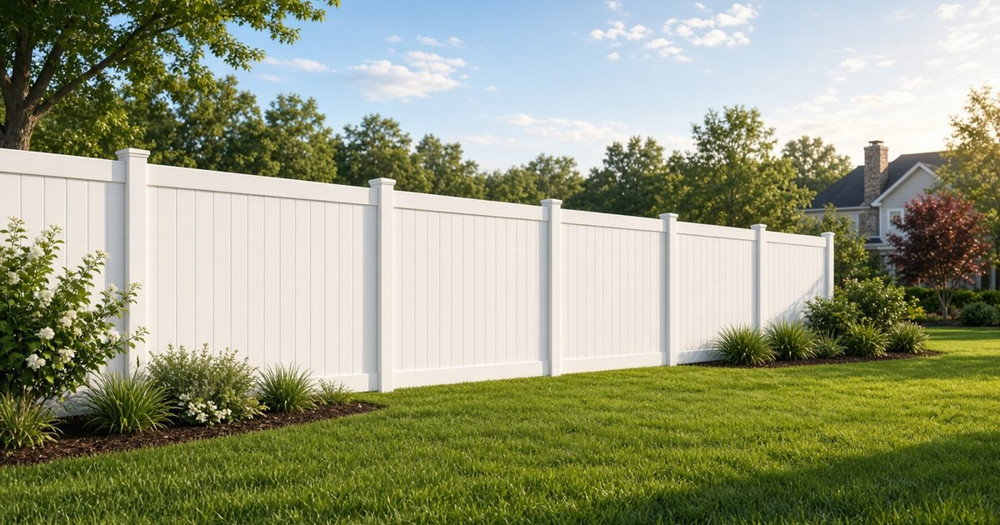

Fence guide
Why Piedmont Red Clay Eats Fence Posts (And How to Set Them Right)
Quick answer: Red clay holds water, turns sticky when wet, and bakes hard when dry, and some clays also swell and shrink. Soils mapped around Fuquay-Varina swell less than that reputation suggests, but a post hole can still trap water, rot the wood, and let freeze and thaw work the post loose. Common practice is gravel for drainage, concrete crowned above the soil, and a ground-contact post when the post is wood.
Fence post installation in Fuquay-Varina starts with the dirt under the panels.
What red clay soil in NC actually does
Clay particles are tiny, so they hold more water than sand, feel sticky when wet, and turn hard when dry. NC State Extension notes that some fine soils swell and shrink enough to affect yard work. The plain-language source is the NC State Extension Gardener Handbook chapter on soils.
North Carolina's official state soil is Cecil, a deep red Piedmont soil that does not match the heaving-clay story. A state soil guide says Cecil is dominated by kaolinite, a clay mineral that does not shrink and swell the way some other clays do. The USDA series description calls Cecil well drained, with red clay under a thinner top layer, so it can be sticky and hard to dig without being a high-swell soil.
Wake County is not all Cecil. The USDA also maps Fuquay, a sandier soil whose sandy surface is often about 20 to 40 inches thick, with low shrink-swell potential. Details are in the Fuquay series description. Fuquay-Varina takes part of its name from that soil, which is a clue that a map is not a promise about your hole. Check the address in the USDA Web Soil Survey, and see our Fuquay-Varina area page for how fence rules change from lot to lot.
Why a post hole in clay still holds water
A soil survey can call the ground well drained and still leave a wet post hole, because digging smears clay along the sides and that smear slows water down. Rain, a downspout, or a low spot then fills the hole so the water sits against the post, and the hole acts like a cup.
Wood that stays wet can rot at the soil line, where the damage hides until the fence leans, and steel can rust on that same line. Vinyl panels do not rot, but they still need a post that stays straight.
Piedmont frost is shallow, but it still matters if the hole is wet. The 2024 North Carolina Residential Code lists a minimum frost line depth of 12 inches in Table R301.2. A note says to check that figure with the local jurisdiction. This code sample shows the table. The table is about buildings, not a backyard fence-post law. Even so, water in a hole can freeze, expand, and thaw, and a loose post can creep through the winter.
We are not quoting an ordinance depth, a permit fee, or an inspection rule for an ordinary yard fence. Our fence FAQ and our fence permit guide cover the permit question, and the depths below should be read as common practice.
Common practice for fence post installation in Fuquay-Varina
A common practice is to bury about one third of the post. For a 6-foot fence, that often means about 24 to 36 inches, deeper than the frost figure used for many house footings. If an inspector or your HOA writes a depth down, follow that paper. Otherwise, ask why that depth fits your yard.
New lots need a second look, because builders often strip, grade, and pack the soil until the fill is denser than an older yard. Our Holly Springs new-build fence guide covers packed fill next door, and the same lots show up on new streets in Fuquay-Varina. Call 811 before anyone digs so utility lines can be marked. That call is a safety step, not a fence permit.
Gravel, a crown above grade, and ground-contact posts
A layer of gravel at the bottom gives water a place to sit away from the wood, but gravel will not dry a yard that stays soggy for days. If puddles linger, fix the grade or move the line before you set posts.
When a post goes in concrete, crown the top above the surrounding soil and slope it away from the wood, so rain runs off instead of back down the hole. North Carolina road specs say to smooth fence-post concrete and slope it away from the post, and that wording is in NCDOT Section 866. That spec is not your fence law. Do not leave a bowl around the post.
Bury ground-contact wood, not lumber labeled only for use above ground. The USDA Forest Service notes that fence posts are treated to Use Category UC4A, which means general ground contact, in Guidelines for selection and use of pressure-treated wood. Read the end tag for the words ground contact, not just the word treated, and coat any fresh cut so the untreated core is not left open. Termites are a known concern in North Carolina. Treatment slows rot and insect damage, but it cannot save a post that stands in a wet hole.
Wood fences and vinyl fences share the hole problem
On a wood privacy fence, the post is the structure and the piece most likely to rot, so board-on-board and shadowbox styles still depend on that post work. Our wood privacy fence page covers styles people ask about in town. Vinyl panels do not rot the way wood does, but a leaning post still ruins the line, and clay splash can stain white vinyl near the ground. Our vinyl fence page covers stains, pollen, and styles, and our vinyl versus wood guide compares the two for a local yard. If an HOA must approve color, height, or which side faces out, start with our HOA fence approval guide.
What to notice before you ask for quotes
After a hard rain, see if water stands on the fence line and if orange clay shows up in the first foot. Note whether the lot is fresh fill or an older yard, and mark the gates, because those posts carry more load. Bring those notes and any HOA rules to the estimate, and ask about the gravel, the concrete crown, and the tag on a wood post. When you want that visit, request a free estimate or call or text (919) 276-8406.
Red clay fence post FAQ
Does Piedmont red clay always swell and crack fence posts?
No. Clay holds water, and many clays swell and shrink, but Cecil and Fuquay are both described as low shrink-swell soils. The usual damage is a wet hole that rots wood or lets freeze and thaw loosen the post, and your lot may be sandier than the yard next door.
How deep should posts be for fence post installation in Fuquay-Varina?
There is no single ordinance depth for an ordinary home fence post. Common practice is about one third of the post below grade, often about 24 to 36 inches for a 6-foot fence, with drainage at the bottom of the hole. Follow any depth an inspector or your HOA puts in writing.
Should fence posts in red clay be set in concrete?
Many installers use concrete because it helps hold the post steady, but drainage decides whether that helps. Gravel underneath, and a top crowned above the soil, keeps the concrete from turning into a cup. Some crews skip concrete and tamp the soil in firm layers, so ask which plan fits your yard.
What kind of wood post holds up in North Carolina ground?
Choose a pressure-treated post rated for ground contact, often labeled UC4A, and keep the fence boards off the soil. Above-ground treated lumber is a different product. Treatment slows rot and insect damage, but it cannot fix a hole that stays full of water.

Free Estimate
Get Your Free Fence Estimate
Tell us about your project and we'll reach out to schedule a free, no-obligation estimate. Prefer to talk now? Call (919) 276-8406.
- Free on-site measurement
- No obligation, no pressure
- Serving Fuquay-Varina and nearby